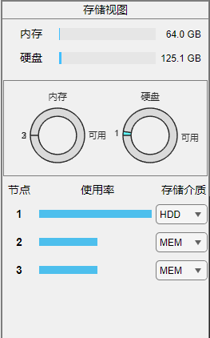
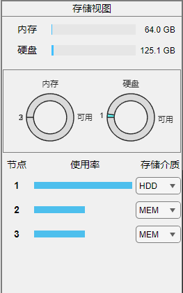

7.2 存储视图
 存储视图 分为三个区域。分别显示缓冲区剩余容量、每个节点的占用率以及节点存储介质及同一介质相对占用率。 当您的 缓冲区位置 为“自定义”时，您可以手动调整存储介质使数据在内存(MEM)与硬盘(HDD)间移动。这会消耗一定时间，在不同平台略有差异。 注：您可以通过左侧滑块调整存储视图与动作视图的显示比例。 注：节点资源占用率（中图）在MATLAB Version ≤ R2023a 显示有所差异（使用饼图代替）。

存储视图 分为三个区域。分别显示缓冲区剩余容量、每个节点的占用率以及节点存储介质及同一介质相对占用率。
当您的 缓冲区位置 为“自定义”时，您可以手动调整存储介质使数据在内存(MEM)与硬盘(HDD)间移动。这会消耗一定时间，在不同平台略有差异。
注：您可以通过左侧滑块调整存储视图与动作视图的显示比例。
注：节点资源占用率（中图）在MATLAB Version ≤ R2023a 显示有所差异（使用饼图代替）。